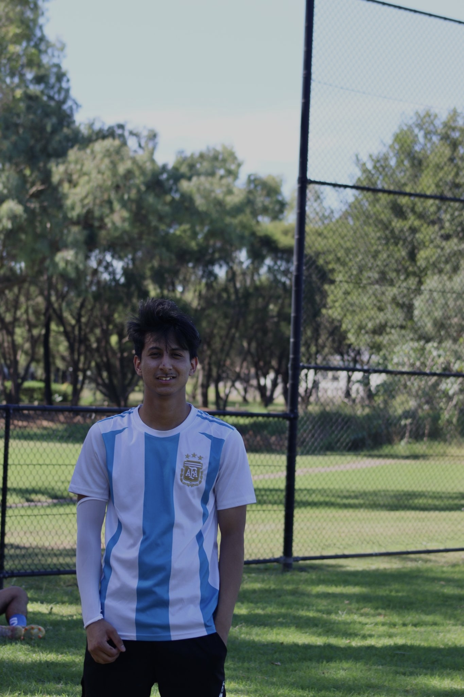

My Hobbies
I believe that hobbies are an essential part of life. They keep me relaxed, happy, and allow me to explore new interests. Here are some of my favorite hobbies:
-
Reading Novels
Reading novels has always been my escape to a world of creativity and imagination. My favorite genres are mystery, fiction, and philosophy. Books like "Ikigai" have taught me valuable life lessons and sparked new perspectives on life. There’s nothing like getting lost in a good book!
-
Playing Football
Football has been a passion of mine for years. The thrill of the game, the teamwork, and the rush of scoring a goal—it's exhilarating! Whether I’m playing for fun with friends or watching a match, football is a sport that brings me joy and excitement. I also enjoy the physical and mental challenge it provides.
-
Photography
Photography allows me to capture the beauty around me and preserve memories. From nature shots to urban landscapes, every picture tells a story. I love experimenting with different styles, lighting, and compositions. Whether it’s through a camera or my phone, photography helps me see the world in a new light.
-
Travelling
Travelling is one of the best ways to learn about different cultures, meet new people, and experience new places. Whether it’s a weekend getaway or a longer adventure abroad, I love exploring new destinations. I believe travelling opens the mind and gives me a broader perspective of the world.